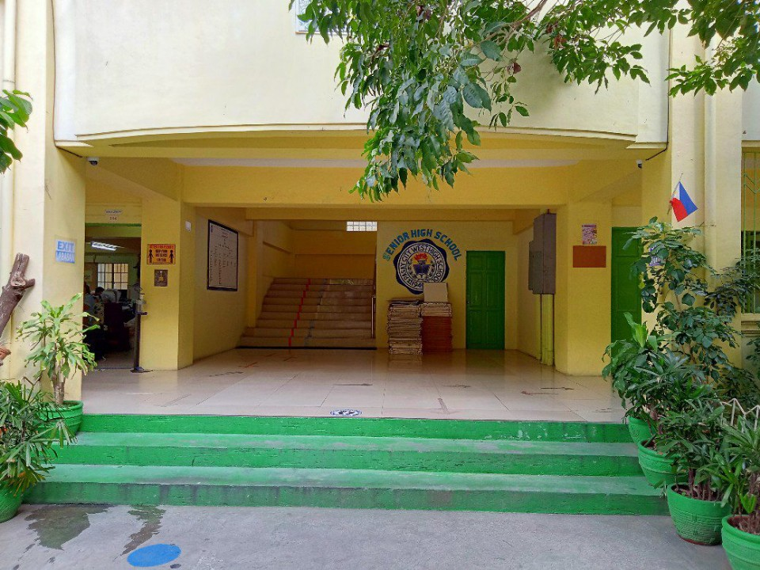
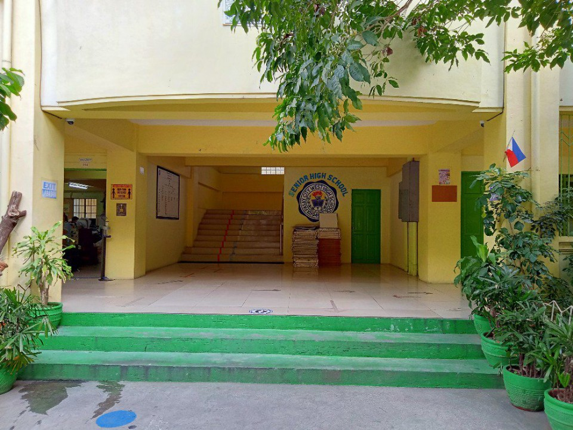
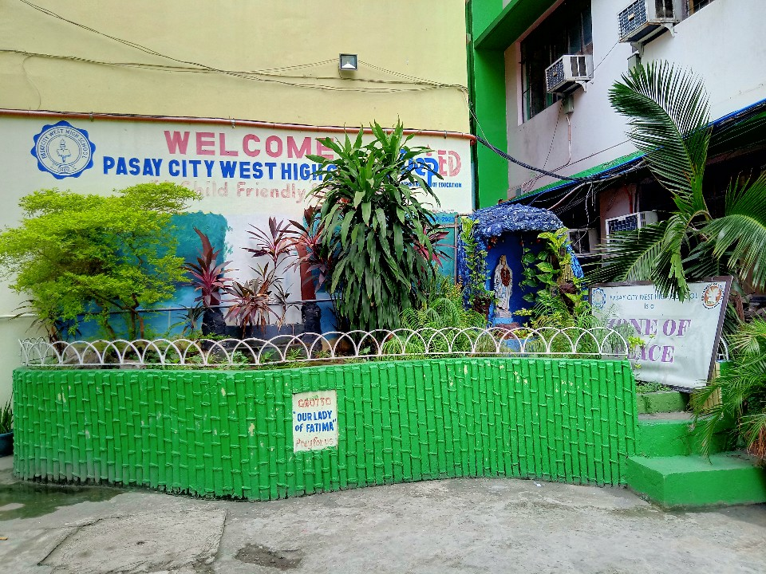
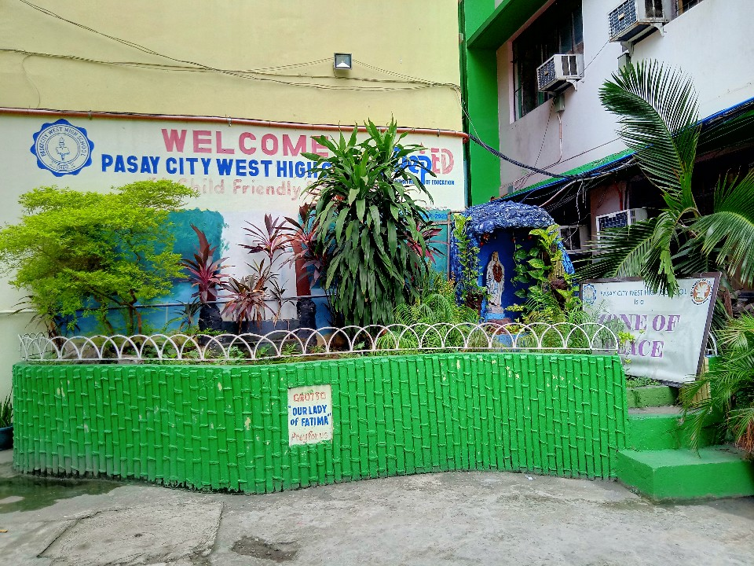
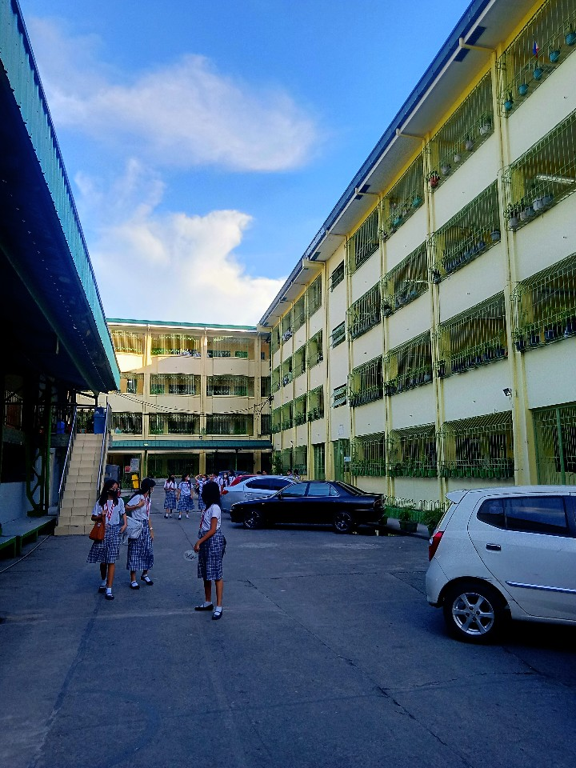
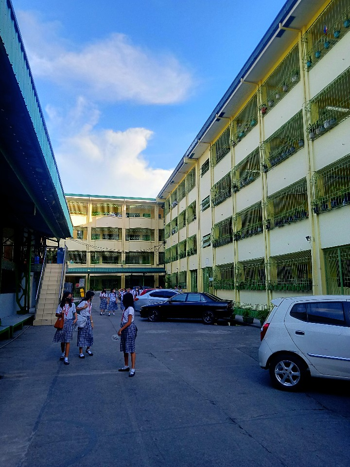

Pasay City West High School
Pasay City West High School is a large public school in Pasadeña Street, FB Harrison, Pasay City, Metro Manila, established in 1949. This school occupied more than 7,500 students. The current Principal IV is Mr. Agapito Teodoro N. Manaog.
| Pasay City West High School | |
|---|---|


(From top, left to right)
Aerial view from Building 3 • Entrace gate • Manuel L. Quezon statue • I love PCWHS landscape • School gymnasium • Hallway in Building 3 4th floor |
|
| Overview | |
| Address | Pasadena Street, FB Harrison, Pasay City |
| Type | Public school |
| Established | 1949 - Present |
| School ID | 305368 |
| Principal | Agapito Teodoro N. Manaog |
| Grades |
Junior: 7 to 10
Senior: 11 & 12 |
| SHS strands |
|
| Number of students | Over 7,400 |
| Campus | Urban |
| Slogan | A Bearer of Excellence Rearing Empowered Nation Builders |
| Nickname | PCWHS, Pasay West, Pasay City West |
| Website | Pasay City West High School |
| History | |
| Previous names |
|
Pasay City West High School has a rich history dating back to its establishment in 1949 when it was known as Manuel L. Quezon High School. At its inception, the school operated with only nine teachers, a clerk, a janitor, and a modest 234 students. These early days were characterized by resource constraints, but the institution's commitment to education was unwavering.
In its inaugural year, students of various ages from Pasay City attended classes in an old building divided into nine classrooms. Despite the limited resources, the first year marked a resounding success. Over the next two school years, enrollment surged by nearly 100%, drawing students not only from Pasay City but also from neighboring Manila and municipalities like Makati, Parañaque, Taguig, Las Piñas, and Muntinlupa.
As the number of enrollees continued to grow, significant challenges arose. The school faced the daunting task of accommodating more students and providing adequate teaching staff. Nevertheless, city officials, led by the late Mayor Carlos Revilla, remained undaunted. They raised funds from various sources, securing a 10,292 square-meter lot along FB Harrison Street. A year later, a 23-room school building was erected, inaugurated on August 25, 1952, with then Vice President Fernando J. Lopez as the guest speaker.
However, as more schools adopted the name of President Manuel Quezon, a decision was made to rename the institution. Under the leadership of Mr. Bernardo A. Fajardo, the first Principal, the school achieved new heights over eighteen years.
Mrs. Anita H. Pizarro succeeded Mr. Fajardo, taking the helm of leadership. Under her tenure, the school witnessed significant growth, with added classrooms, hired teachers, and improved facilities. Yet, the enrollment continued to rise, necessitating further expansion. This led to the creation of Pasay City East High School in Malibay District and Pasay City South High School in Nichols Air Base, which later became Villamor Air Base.
The school has remained a pillar of education in Pasay City, maintaining its reputation as a leader among public secondary schools. Over 75 years, it has evolved, adapted, and flourished. Today, Pasay City West High School, in addition to its Regular Program, offers Special Programs such as Science, Technology and Engineering (STE), Special Program in Foreign Language (SPFL) in German and Mandarin, Open High School, and Alternative Learning System (ALS) for Out of School Youths.
Through the dedication of its leaders, educators, and students, Pasay City West High School continues to provide quality education and uphold its legacy of excellence in Pasay City's educational landscape.
Renaming
In 1952, Manuel L. Quezon High School was renamed to Pasay City High School after the other schools were named after the late President Manuel Quezon, school officials proposed to the city council to change the name of the institution under Resolution No. 145.The creation of two annexes which is the Pasay City East High School and Pasay City South High School (now Villamor Air Base) led to be renamed from Pasay City High School to Pasay City West High School in 1967.
View full history here
Building 1
This is the most important building of all. In 2015, as the Building 1 was demolished, the English Department and the Social Studies Department was moved in Building 3.Inside of Building 1
At the first floor of the building, the Principal's office, the Assistant Principal office, the Records Office, the Finance room and the Conference room are located here in the first floor.At the second floor of the building, the Audio Visual Room (AVR), the Inclusive room, the Library room and the Guidance Office are located here in the second floor.
At the third floor of the building, the classrooms, and the SPFL room are located here in the third floor.
At the fourth floor of the building, the classrooms, and the Values Department Faculty room are located here in the fourth floor.
Building 2
This building is one of the largest buildings in Pasay City West High School. The year level who occupies this building are the Senior students or the Grade 11 and 12 students of the latter school. First, the latter building was the largest building in the Pasay City West High School, but not until the building had been separated into two: the Building 1 and the Building 2.Inside of building 2
The middle part of the building, this is the main entrance of Building with a huge stairs and a logo of Senior High School of Pasay City West High School.At the first floor of the building, the STEM Laboratory room, the classrooms, the Senior High School Faculty room, the EIM room, the EIM Laboratory room, the stock room, and the supply room are located here in the first floor.
At the second floor of the building, the classrooms of Grade 11 and 12, and the ICT rooms are located here in the second floor.
At the third floor of the building, the classrooms, the Bartending room, the Bread and Pastry Production room, and the Food and Beverage Services room are located here in the third floor.
At the fourth floor of the building, the classrooms, and the ICT rooms are located here in the fourth floor.
Building 3
This building doesn't occupy any departmental rooms before. It is only occupied by Grade 9 and 10 students. This building is the newest building that has made in Pasay City West High School. This building is on Pasay City West High School since 1949.But in the year 2004, it has been demolished because of its walls. The Pasay City West High School has started to renovate this building in the year 2005 and has been finished in the year 2007 and started to be occupied by students at the year 2008.
Inside of Building 3
At the first floor of the building, the Multi-Purpose Cooperative Canteen, the School Managed Canteen, the SDRRMC, the classroom, and the Automotive Laboratory room are located here in the first floor.At the second floor of the building, the Filipino Department room, the TLE Practical Arts room, and the classrooms are located here in the second floor.
At the third floor of the building, the MAPEH Department room, the Social Studies Department room, the CIC/GAD Center, and the classrooms are located here in the third floor.
At the fourth floor of the building, the Mathematics Department room, the English Department room, the Post Publication room, the reading corner, the math corner, and the classrooms are located here in the fourth floor.
Building 4
This building is dedicated to the former mayor of Pasay, Attorney Pewee Trinidad. This Building has the size of 45 feet in Pasay City West High School.Since 1949, this building has been use by various students. It was built in late 1990s. Since now.
This Building is occupied by the STE (Science, Technology and Engineering students and top sections of the regular class.
STE students must maintain a grade of 85 and above for all academic subjects, otherwise they will be transferred to another school.
This Building is occupied by the most departmental rooms such as the MAPEH Department and HE (Home Economics) Department. But at the year 2008, the MAPEH Department has moved at the building 3.
Inside of Building 4
This building were full of plants decorated by the HE Department in Pasay City West High School.At the first floor of the building, the Feeding room, the TLE Department room, the Biology Laboratory room, the Earth Science Laboratory room, the School Clinic, the Isolation room, the Science Department room, and tge classrooms are located here in the first floor.
At the second floor of the building, the classrooms, the Cookery Laboratory room, and the Computer Laboratory room are located here in the second floor.
At the third floor of the building, the classrooms, the Cookery Laboratory room, and the Dressmaking room are located here in the third floor.
At the fourth floor of the building, the classrooms, the Chemistry Laboratory room, the Computer Laboratory room, and the Physics Laboratory room are located here in the fourth floor.
The Gymnasium
Before the demolition
The Pasay City West High School's Gymnasium is placed at the center of the school. The size of this building is 155 feet length and 96 feet width, making it the widest occupied space in the school. It is where the Intramurals, Dance competition and some important events such as Mass are being held. This also where the dance competition such as the modern dance and folk dance held.Inside of the gymnasium
The gymnasium has a large space where programs, dance competition, and other events are held here. They have a large wooden board where it can post about the current program or event.Students can walk around in this place before the class and during the break time.
There's have a seat on each side of gymnasium that's allow students to sit.
The gymnasium have a large sound system and it can be used during the program or event.
At the side of the stage, there's have a faculty room.
The stage are 3 steps tall and it can be used during programs or events. This area are have a decoration by the school depending on the program.
The mezzanine floor are located at the side of the gymnasium and it can be accessed by stairs. There's have a things stored in this place and it is used for sports and for programs. The faculty rooms are located here in each side.
Demolition of gymnasium to build new one
The principal, Mr. Agapito Teodoro N. Manaog, said during the students orientation on August 29, 2023 that the gymnasium wi be demolished and replace it with 5-story building with gymnasium at 5th floor. The new building has a feature of air-conditioning (including the gymnasium) and elevator.The demolition of the gymnasium was started on first week of November 2023 and it was finished by first week of February 2024. Construction began on February 2024 until today.
Entrance gate
This gate is mostly used for going inside of the school. This gate have a guardhouse where the security guards staying there for security and safety of the school.Also, this gate can be used to go out from the school by few people and students. When the exit gate is closed, this gate can be used for exit.
Exit gate
This gate is mostly used for going outside of the school. This gate are controlled by security guards to prevent going inside and to open the gate at the correct time.This gate are locked at all, unless if the class is ended for safety and security.
There's have many features in Pasay City West High School such as large canteen, classroom, RFID attendance system, comfort rooms, landscapes and washing area.
Canteen
The canteen is large so that students can buy here.Multi-Purpose Cooperative Canteen
The Multi-Purpose Cooperative Canteen is located at first floor of Building 3. This is the largest canteen in the school with the area of two classrooms. Students can buy their wants like food, drinks and school supplies.During break time, this canteen is crowded by students to buy food.
School Managed Canteen
The School Managed Canteen is also located beside of Multi-Purpose Cooperative Canteen and it also sells drinks, meals and others so that students can buy here.Mostly, they sell are rice with meal, juices, and water.
Eating area
The eating area is located at the front of Building 3. They have tables which students can place their things, a trash bin at the center of the table that students no need to stand and walk to throw their trash, and concrete seat. It provides a roof to protect from the sun heat and rain.Some students preferred to eat at the classrooms, gymnasium or somewhere else in the school.
As of today, the tables are removed to occupy more space for students.
Classroom
The classroom where students are learning. There's have teacher's table, armchairs, writing boards, electric fans, air conditioner (in some rooms, especially Building 4), electrical outlets, and lightning to visualize properly.Each classroom can occupy from 30 to 75 students. The classroom can be maintained by students during break or before class dismissal to make the classroom clean.
RFID attendance system
The RFID attendance system that students must tap their ID card in the machine for their attendance.Sometimes, parents can receive a text message to their phone that their children is now in the school. This is helpful that parents know what time their child are now Inside of the school.
This feature is used since February 2023 until June 2023. Until August 29, 2023, the RFID card is being used by students for identity but tapping in the machine is unavailable.
Free WiFi
The Free WiFi is provided by Department of Information Communication and Technology (DICT). Students can access endlessly the network by registering to 192.168.1.1.The free WiFi is now unavailable since December 2023.
Comfort rooms
Comfort rooms are located in stairs in all buildings. These comfort rooms was cleaned by janitors everyday.Students can use it in case they want to go here.
Some of them are out of toilet and some of them are for teachers only.
In August 2023, as Mr. Agapito Teodoro N. Manaog become the principal of the school, the school painted and cleaned the comfort rooms with blue for male and pink for female. Unfortunately, there's no lock in each door of comfort rooms for privacy.
Inside of confort room, there's a cubicles, sink, and mirror for convinces.
Landscapes
The school's landscapes are beautiful because of its decorations and can be enjoyed by most students.The beautiful swan, garden, and the "I love PCWHS" looks pretty good in the front of Building 1.
In the front of Building 2, there's have a long garden with beautiful landscapes, especially with flowers, turtle, snowman, and also the statue of former President Manuel L. Quezon.
The tress are tall as well and some of their leaves falling due to heat.
The mini garden and beautiful flowers at the front and inside of Building 4.
Washing area
This type of feature is very important at all is to wash their hands. Students can follow to the health protocol like washing hands. This is helpful to kill germs and avoid the students from getting sick.CCTV
Each corner of the school, buildings and stairs are installed with CCTV. The CCTV is monitored by the principal to monitor student's activity. That's why students are not allowed to go outside of the classroom even there's no teacher in the room. Also, this is helpful to locate lost items.Security guards
Security guards is always loitering at the guardhouse in the entrance and exit gates for school security. This to prevent non-PCWHS students, outsiders, and other unauthorized persons to get inside in the school.Security guards can be spread anywhere for patrolling.
The Pasay City West High School are having very strict rules and students need to follow these rules to avoid any consequences.
-
School uniform
-
Students should adhere to the school uniform policy and avoid clothing that is offensive or distracting. The students' uniform should be as required by the school. Incorrect uniform (like another color or for another school) will not be admitted to school.
-
For male (JHS):
- White polo with patches
- White T-shirt or shirt inside
- Gray pants
- Black shoes
-
For female (JHS):
- White blouse with patches
- White shirt inside
- Blue striped dress that the length is below the knees
- Black shoes
- White socks
-
For Senior High School:
-
Old uniform
- White polo shirt
- Black pants
- Black shoes
-
New uniform
- Dirty white polo
- Gray pants
- Black shoes
-
Old uniform
-
For male (JHS):
- While T-shirt may be allowed to enter but other than that are prohibited as the order from the principal, Mr. Agapito Teodoro N. Manaog.
- Wearing shoes other than black is prohibited.
-
Students should adhere to the school uniform policy and avoid clothing that is offensive or distracting. The students' uniform should be as required by the school. Incorrect uniform (like another color or for another school) will not be admitted to school.
-
Proper haircut and colors
-
Our school places importance on maintaining a well-groomed and uniform appearance. The rules regarding proper haircut and hair colors are as follows:
-
For male:
- The hair does not cover the ear.
- Hair length is limited to 3×4 is allowed
- The length at the back will not reach the collar of the uniform.
- Hair coloring is not permitted. Natural black and pure black is allowed.
-
For female:
- The hair is properly combed.
- If there are bangs it should not reach the eyelid.
- Hair coloring is not permitted. Natural black and pure black is allowed.
-
For male:
-
Our school places importance on maintaining a well-groomed and uniform appearance. The rules regarding proper haircut and hair colors are as follows:
-
Vaping and smoking
- The use of tobacco products, including vaping and smoking, is strictly prohibited on school grounds. This rule is in place to ensure a healthy and smoke-free environment for all.
-
Vandalism/graffiti
- Writing on walls, desks, or defacing school property in any way is not permitted.
-
Bullying
- Bullying is not tolerated in our school. This includes any repeated aggressive behavior, either verbal, physical, or online, that is intended to harm, intimidate, or belittle another student.
-
Destruction of school or classroom equipment
- Deliberate damage to school property, including classroom equipment, textbooks, or any other school materials, is strictly prohibited.
-
Fighting
- Engaging in physical altercations or fights on school grounds disrupts the learning environment and poses a safety risk to all students. Such behavior will not be tolerated.
- Any fight happened outside of school grounds will be reported to the school administrators and the students may order for suspension or dismissal.
-
Frequent absences and lates
- Repeatedly absences and/or arriving late to school or classes without a valid excuse is not allowed.
- Absences should provide an excuse letter with parent signature to believe that this is why he/she is absent.
-
Using illegal drugs
- The use, possession, or distribution of illegal drugs or controlled substances is strictly forbidden. Violators will face severe consequences, including legal action.
-
Bringing and consuming alcoholic beverages
- Bringing alcoholic beverages onto school property or consuming them during school hours is against the rules. We maintain a strict no-alcohol policy on campus.
-
Disrespect towards teachers and school staff
- Students are expected to show respect and courtesy to all teachers and staff members. Disrespectful behavior, including rudeness or insubordination, is not acceptable.
-
Cutting classes
- Attending all scheduled classes is essential for academic success. Skipping classes without a valid reason is considered truancy and will result in disciplinary action.
-
Using cellphones and other electronics during class
- To maintain a focused learning environment, the use of cellphones and other electronic devices during class is generally not allowed.
- The use of cellphones and other electronic devices is only explicitly permitted by the teacher for educational purposes during the class.
-
Unauthorized visitors
- Students should not bring unauthorized visitors onto school property during school hours.
- Inclusion of parent/guardian will be allowed.
-
Harassment or discrimination
- Any form of harassment or discrimination based on race, gender, religion, or any other characteristic is strictly prohibited.
-
Cheating or plagiarism
- Cheating on exams, assignments, or plagiarizing someone else's work is not allowed and will result in consequences.
-
Disruptive behavior
- Engaging in behavior that disrupts the learning environment, such as shouting, loud disruptions, or excessive talking, is prohibited.
-
Weapons or dangerous objects
- Bringing weapons or dangerous objects such as guns and knifes onto the school premises is strictly forbidden.
-
Skipping detention or other punishments
- Refusing to attend detention or evade other disciplinary actions will result in further consequences.
-
Theft or stealing
- Stealing from fellow students, teachers, or the school itself is a serious offense.
-
Cyberbullying
- Engaging in cyberbullying, including online harassment or spreading harmful content about fellow students or staff, is strictly prohibited.
-
Use of disrespectful language
- Using disrespectful or offensive language towards others, including peers, teachers, or staff, is not allowed.
-
Being drunk or Intoxicated
- Entering school while drunk or intoxicated is prohibited. This is to maintain order and safety for everyone within the school.
-
Earrings for males
- At Pasay City West High School, the dress code includes guidelines for wearing earrings. Male students are expected to adhere to a no-earring policy. This rule is in place to promote a neat and uniform appearance among male students. Earrings are not allowed as part of the school uniform.
-
No ID, no entry policy
- Students must wear the ID at all times in every time they go to school. When the student is not wearing the ID, security guards will be caught them and write their name and section in the logbook. If repeated, consequences may occur.
Punishments
Pasay City West High School has very strict rules. If students break any of these rules, they will receive punishments. The severity of the punishments depends on the specific rule they have violated.- First offense: the consequences vary based on the rule violated. For minor infractions, such as equipment damage, students may be required to repair the damages or issue an apology. For major violations, parents may be contacted, and the student may face a 3-day suspension or possible dismissal from the school.
- Second offense: parents will be contacted, and the student will face a 3-day suspension. In cases of serious violations, the student may be dismissed, and their report card will be returned.
- Third offense: the student may face dismissal from the school, and their report card will be returned. They will be required to find another school for transfer.
- On November 29, 2022, two men in room of 9 - Kamagong engaged in a fight even though there was a teacher present during the last period (between 4:40 PM - 5:30 PM). Both individuals were subsequently taken to the guidance office and suspended for three school days.
- On June 14, 2023, Grade 11 students turned off the circuit breaker on the 2nd floor of Building 3, near the stairs next to room 208, resulting in a blackout in rooms 205 to 208. A Grade 9 student entered the TLE Practical Arts faculty room, and it was then realized by the teachers that the Grade 11 students were responsible for the blackout. The teachers, who are professionals in electrical matters, restored the electricity by turning the circuit breaker back on, much to the delight of the students in rooms 205 to 208.
- On June 15, 2023, at 10:19 AM, a magnitude 6.5 earthquake with its epicenter in Calatagan, Batangas, caused panic at the school. Classes were immediately suspended, including the afternoon sessions, starting at 10:20 AM. The school's engineering and disaster response teams inspected buildings and structures to ensure safety.
- On September 13, 2023, some Grade 10 students were found using illegal drugs and vaping inside the restroom. Most of these students were from sections Agoncillo, Gomez, Malvar, and Jaena. On the same day, two female Grade 10 students were caught vaping in the women's restroom and posted a video on TikTok while wearing the school uniform of PCWHS. Due to the severity of these violations, the school dismissed the students mentioned above.
- On October 13, 2023, at 8:24 AM, a magnitude 5.0 earthquake originating from Calaca, Batangas prompted students to evacuate to the school's open space area for safety. The School Risk Management Council conducted inspections of the classrooms to assess for any potential wall cracks. By 9:00 AM, following directives from the Pasay City School's Division Office, the school principal issued instructions for students to return to their classrooms, and classes resumed as scheduled. No injuries were reported in this incident.
- On November 29, 2023, two men engaging in fight in room of 10 - Lapulapu. As of now, these students are still attending in class and it propose to got in suspension or dismissal.
- On January 15, 2024, a fight happened in 10 - Luna room. Both person are given a suspension for 3 school days.
- On August 29, 2024, a student from other section approched a student that was inside of the room of ABM11C then the fight was started. Therefore, both of them has talked with a teacher and no suspension was given.


 



 



 
